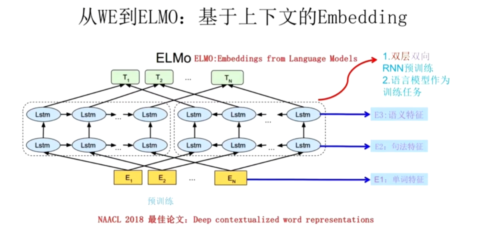
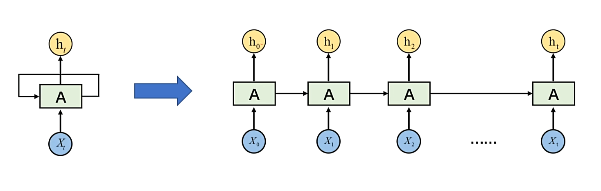

# NLP 自然语言处理
学习笔记
# 常见任务
- 文本分类：情感分析（积极 / 消极）、垃圾邮件识别、新闻主题分类【句子级别】
- 序列标注：命名实体识别（找人名、地名、手机号）、文本生成、信息抽取、文本转化【Token 级别】
# 文本表示
# 分词
- 词级分词：将文本按照词切分在英语中空格往往是天然的切词标志，但是容易出现 OOV 问题（未登录词问题）
- 字符级分词：一个字母、数字、标点甚至空格，都会被视作一个独立的 token，不会有 OOV 问题，但模型必须依赖更长的上下文来推断词义和结构，这显著增加了建模难度和训练成本。
- 子词级分词：将词语切分为更小的单元 —— 子词（subword），例如词根、前缀、后缀或常见词片段。
以上是英文适用的分词方法，下面是中文适用的分词方法。
- 字符级分词：一个字就进行一次切分，比英文中的字符分词，中文的字符分词更加 “语义友好”。
- 词级分词：由于中文没有空格等天然词边界，词级分词通常依赖词典、规则或模型来识别词语边界。
- 子词级分词：它们以汉字为基本单位，通过学习语料中高频的字组合（如 “自然”、“语言”、“处理”），自动构建子词词表。在当前主流的中文大模型（如通义千问、DeepSeek）中，子词分词已成为广泛采用的文本切分策略。
# JiebBa 分词组件
word_gen = jieba.cut("我的名字叫Karry，来自计算机科学技术学院") | |
for word in word_gen: | |
print(word) |
我
的
名字
叫
Karry
，
来自
计算机
科学技术
学院
# 词表示
- One-hot 编码（独热编码）：它将词汇表中的每个词映射为一个稀疏向量，向量的长度等于整个词表的大小。该词在对应的位置为 1，其他位置为 0。在实际自然语言处理任务中，one-hot 表示已经很少被直接使用。
- 语义化词向量：它通过对大规模语料的学习，为每个词生成一个具有语义意义的稠密向量表示。比如 “女人” 和 “女孩”，这两个词向量就很接近。Word2Vec。
# Word2Vec
左侧是 CBOW，中间词是教师，以此来学习上下文。
右侧是 Skip-gram，上下文是教师，以此来学习中间词。
# GENSIM 词向量组件
# 加载与使用公开词向量
from gensim.models import KeyedVectors | |
model_path = 'sgns.weibo.word.bz2' | |
model = KeyedVectors.load_word2vec_format(model_path) |
similarity = model.similarity('公交', '地铁') | |
print('公交和地铁的相似度', similarity) |
公交和地铁的相似度 0.65458214
model.most_similar(positive=['男人', '女孩'], negative=['男孩'], topn=10) |
男人 + 女孩 - 男孩 = 女人
[(‘女人’, 0.6578881740570068),
(‘女孩子’, 0.515068531036377),
(‘女生’, 0.4519447982311249),
(‘女人真’, 0.44206273555755615),
(‘女人们’, 0.4369858503341675),
(‘女人爱’, 0.435453325510025),
(‘寡言少语’, 0.42479249835014343),
(‘男孩子’, 0.42177465558052063),
(‘看女人’, 0.41949161887168884),
(‘笨女人’, 0.4182003140449524)]
# 训练自己的词向量
import pandas as pd | |
import jieba | |
from gensim.models import Word2Vec | |
comments = pd.read_csv('./data/online_shopping_10_cats.csv', encoding='utf-8') | |
reviews = comments['review'] | |
reviews = reviews.dropna() | |
sentences = [[token for token in jieba.__lcut(review) if token.strip() != ''] for review in reviews] | |
model = Word2Vec( | |
sentences, # 已分词的句子序列 | |
vector_size=100, # 词向量维度 | |
window=5, # 上下文窗口大小 | |
min_count=2, # 最小词频（低于将被忽略） | |
sg=1, # 1:Skip-Gram，0:CBOW | |
workers=4 # 并行训练线程数 | |
) | |
model.wv.save_word2vec_format('./data/word2vec.txt') |
# 词向量的应用
import torch | |
from torch import nn | |
from gensim.models import KeyedVectors | |
# 加载词向量 | |
wv = KeyedVectors.load_word2vec_format('./data/word2vec.txt') | |
# 构建词向量矩阵 | |
num_embedding = len(wv.key_to_index) | |
embedding_dim = wv.vector_size | |
embedding_matrix = torch.randn(num_embedding, embedding_dim) | |
for word, index in wv.key_to_index.items(): | |
embedding_matrix[index] = torch.from_numpy(wv[word]) | |
print(embedding_matrix.shape) | |
# 创建 Embedding | |
embedding = nn.Embedding.from_pretrained(embedding_matrix) | |
text = '我喜欢乘坐地铁' | |
tokens= jieba.lcut(text) | |
input_ids = [wv.key_to_index[token] for token in tokens if token in wv.key_to_index] | |
input_tensor = torch.LongTensor(input_ids) | |
embedding(input_tensor) |
# ELMo 模型 —— 一词多义问题
NNLM 模型是在预测下一个词，而词向量是副产品。
Word2Vec 模型是在专门做词向量，有 CBOW 和 Skip-gram。
ELMo 模型解决的是一词多义的问题。
ELMo 不仅仅是训练了一个 Q 矩阵，还把这个词的上下文信息融入到这个 Q 矩阵中，左边的 LSTM 获取 E2 的上文信息，右侧的 LSTM 获取下文信息。
T1 包含了第一个词的特征，与此同时也包含了语法特征和语义特征。
然而 LSTM 无法并行计算，因此我们引入了注意力机制。
# RNN 基本结构
RNN 以时间步为基本单位，逐个处理每一个 Token，新的隐藏状态是由，上一个隐藏状态与当前步共同决定的。

x1，x2，x3…xt 这是一组特征，但是这是与时间有关的特征，hₜ是每时每刻的预测。
比如一句话：“我出生在中国，我会说中文”
我们可以按时间步展开：
| 时间步 | 输入 xₜ（词向量） | 隐藏状态 hₜ（编码了前面的上下文） | 可能的预测 yₜ（下一个词） |
|---|---|---|---|
| t=1 | “我” | h₁（编码了 “我”） | “出生” |
| t=2 | “出生” | h₂（编码了 “我 出生”） | “在” |
| t=3 | “在” | h₃（编码了 “我 出生 在”） | “中国” |
| t=4 | “中国” | h₄（编码了 “我 出生 在 中国”） | “，” |
| t=5 | “，” | h₅（编码了 “我 出生 在中国 ，”） | “我” |
| t=6 | “我” | h₆（编码了前半句 +“我”） | “会” |
| t=7 | “会” | h₇（编码了前半句 +“我 会”） | “说” |
| t=8 | “说” | h₈（编码了前半句 +“我 会 说”） | “中文” |
RNN 的隐藏状态 hₜ 起到了 **“记忆”** 的作用：
- 当模型看到 “中国” 时，h₄ 已经编码了 “我出生在中国” 这个信息。
- 当模型看到后半句 “我会说中文” 时，h₈ 已经编码了整句话的上下文，因此它可以推断出 “中文” 是合理的下一个词，因为 “出生在中国” 和 “会说中文” 之间有语义关联。
在 RNN 中，每个词 xₜ 是随时间输入的特征，隐藏状态 hₜ 是模型对 “到目前为止所有词” 的理解，而预测 yₜ 是基于这种理解做出的下一步判断。
# RNN 与 FCNN（全连接神经网络）的区别
左侧是 RNN，右侧是全连接神经网络。全连接神经网络是一个直筒的结构，RNN 是一个与时间有关的循环结构。
# FCNN 的展开
# RNN 的展开
# 为什么？
FCNN 把每个输入当作独立静态向量
RNN 把输入看成随时间展开的序列，用共享参数 + 循环隐状态来显式建模 “过去” 对 “现在” 的影响。
# 数学表达
# 权重共享
权重共享” 是 RNN 与 CNN 里最常被提到的一个核心设计，但它不是 “所有神经元共用同一个数”，而是同一组参数（矩阵 / 向量）在多个位置、多个时间步或空间位置反复使用。
# 双向 RNN
双向递归神经网络（Bidirectional Recurrent Neural Network，简称 Bi-RNN）是一种特殊的递归神经网络（RNN），它在处理序列数据时，不仅考虑了过去的信息，还考虑了未来的信息。这使得 Bi-RNN 在处理诸如自然语言处理（NLP）任务时特别有用，因为它能够同时利用上下文信息。
# 在 PyTorch 使用 RNN
import torch.nn as nn | |
# 双层双向 RNN | |
rnn = nn.RNN(input_size=3, hidden_size=4, num_layers=2, batch_first=True, bidirectional=True) | |
# shape: (batch, seq_len, input_size) | |
input = torch.randn(2, 4, 3) | |
output, hn = rnn(input) | |
print(output.shape) | |
print(hn.shape) |
torch.Size([2, 4, 8])
torch.Size([4, 2, 4])
# 词嵌入层 API 应用
# 作用
把词或词对应的索引转为词向量
# 使用框架实现
import torch | |
import jieba | |
import torch.nn as nn | |
def dm01(): | |
text = "当您登录平台即表示您接受本隐私政策的全部内容，并同意平台按本政策收集、使用和保护您的相关个人信息。" | |
words = jieba.lcut(text) | |
print(words) | |
''' | |
len(words) : 词表大小 | |
embedding_dim : 词向量维度 | |
''' | |
embed = nn.Embedding(len(words), embedding_dim=4) | |
for i, word in enumerate(words): | |
# 词索引（张量）转变为词向量 | |
word2Vec = embed(torch.tensor([i])) | |
print(word, word2Vec) | |
if __name__ == '__main__': | |
dm01() |
# RNN 的 API 使用
RNN 就像是你的大脑，在看电影的过程中记住剧情。
import torch | |
import torch.nn as nn | |
''' | |
input_size：词向量的维度 | |
hidden_size：隐藏状态的维度 | |
num_layers：隐藏层数 | |
batch_first：批次优先 | |
''' | |
rnn = nn.RNN(input_size=10, hidden_size=20, num_layers=1) | |
''' | |
5：有5个词 | |
3：3个批次 | |
10：每个词的细节是10维度 | |
''' | |
x = torch.rand(5, 3, 10) | |
''' | |
1：隐藏层层数 | |
3：句子数量 | |
20：有20个循环维度，也就是隐藏状态的维度 | |
''' | |
h0 = torch.zeros(1, 3, 20) | |
''' | |
RNN处理 | |
x：本次的输入 | |
h0：上一次的隐藏状态 | |
输出 | |
output：每个时间步的输出，包含了所有时间步骤的隐藏状态 | |
h1：最后一次隐藏状态，大脑里最新的剧情 | |
''' | |
output, h1 = rnn(x, h0) | |
print(f'output_shape:{output.shape}') | |
print(f'h1_shape:{h1.shape}') |
# RNN 的文本生成
# _*_ coding : utf-8 _*_ | |
# @Time : 2025/10/31 10:02 | |
# @Author : KarryLiu | |
# File : 歌词生成 | |
# @Project : pytorchSTU | |
import math | |
import torch | |
import jieba | |
from torch.utils.data import DataLoader, Dataset | |
import torch.nn as nn | |
import torch.optim as optim | |
import time | |
from tqdm import tqdm | |
""" | |
实现步骤： | |
1. 获取数据，进行分词 | |
2. 获取词表，构建数据集 | |
3. 搭建RNN神经网络模型 | |
4. 训练模型 | |
5. 模型预测 | |
6. 测试 | |
""" | |
def build_vocab(): | |
unique_words, all_words = [], [] | |
with open('data/jaychou_lyrics.txt', 'r', encoding='utf-8') as f: | |
for line in tqdm(f, desc='正在处理数据', total=5819): | |
words = jieba.lcut(line) | |
all_words.append(words) | |
for word in words: | |
if word not in unique_words: | |
unique_words.append(word) | |
word2index = {word: index for index, word in enumerate(unique_words)} | |
index2word = {index: word for index, word in enumerate(unique_words)} | |
# 将词表转为索引，【0，1，2，3】，这个是一句歌词 | |
corpus_idx = [] | |
for all_word in all_words: | |
tmp = [] | |
for word in all_word: | |
tmp.append(word2index[word]) | |
tmp.append(word2index[' ']) | |
corpus_idx.extend(tmp) | |
word_count = len(unique_words) | |
return unique_words, word2index, word_count, corpus_idx | |
class LyricsDataset(Dataset): | |
def __init__(self, corpus_idx, num_chars): | |
super().__init__() | |
self.corpus_idx = corpus_idx | |
self.num_chars = num_chars | |
self.word_count = len(corpus_idx) | |
self.sentence_len = self.word_count // num_chars | |
def __len__(self): | |
return self.sentence_len | |
def __getitem__(self, index): | |
start = min(max(index, 0), self.word_count - self.num_chars - 1) | |
end = start + self.num_chars | |
sentence_x = self.corpus_idx[start:end] | |
sentence_y = self.corpus_idx[start + 1:end + 1] | |
sentence_x = torch.tensor(sentence_x, dtype=torch.long) | |
sentence_y = torch.tensor(sentence_y, dtype=torch.long) | |
return sentence_x, sentence_y | |
class TextGenerator(nn.Module): | |
def __init__(self, unique_words_count, ): | |
super().__init__() | |
self.embedding = nn.Embedding(unique_words_count, 128) | |
self.rnn = nn.RNN(128, 256, 1) | |
self.linear = nn.Linear(256, unique_words_count) | |
def forward(self, input, hidden): | |
embed = self.embedding(input) | |
output, hidden = self.rnn(embed.transpose(0, 1), hidden) | |
output = self.linear(output.reshape(shape=(-1, output.shape[-1]))) | |
return output, hidden | |
def init_hidden(self, batch_size): | |
return torch.zeros(1, batch_size, 256) | |
def train(): | |
unique_words, word2index, unique_word_count, corpus_idx = build_vocab() | |
dataset = LyricsDataset(corpus_idx, 32) | |
dataloader = DataLoader(dataset, batch_size=5, shuffle=True) | |
model = TextGenerator(unique_word_count) | |
optimizer = optim.Adam(model.parameters(), lr=0.01) | |
loss_fn = nn.CrossEntropyLoss() | |
min_loss = math.inf | |
loss = 0 | |
total_loss = 0 | |
iter_times = 0 | |
for epoch in range(50): | |
for i, (x, y) in enumerate(tqdm(dataloader, desc=f'正在训练第{epoch + 1}轮', total=len(dataset) // 5)): | |
hidden = model.init_hidden(5) | |
output, hidden = model(x, hidden) | |
y = torch.transpose(y, 0, 1).reshape(shape=(-1,)) | |
loss = loss_fn(output, y) | |
optimizer.zero_grad() | |
loss.backward() | |
optimizer.step() | |
iter_times += 1 | |
total_loss += loss.item() | |
print(f'第{epoch + 1}轮，总损失：{total_loss / iter_times}') | |
if loss < min_loss: | |
min_loss = loss | |
torch.save(model.state_dict(), 'model.pth') | |
def eval(start_word, seq_len): | |
unique_words, word2index, unique_word_count, corpus_idx = build_vocab() | |
model = TextGenerator(unique_word_count) | |
model.load_state_dict(torch.load('model.pth')) | |
hidden = model.init_hidden(1) | |
word_index = word2index[start_word] | |
generate_sentence = [word_index] | |
for i in range(seq_len): | |
output, hidden = model(torch.tensor([[word_index]]), hidden) | |
output = output.reshape(shape=(-1,)) | |
word_index = torch.argmax(output).item() | |
generate_sentence.append(word_index) | |
for e in [unique_words[index] for index in generate_sentence]: | |
print(e, end='') | |
if __name__ == '__main__': | |
train() | |
eval('分手', 100) |
分手的话像语言暴力你而香 牧草有没有 我马儿有些瘦
天涯尽头 满脸风霜落寞 近乡情怯的我
我说店小二 三两银够不够
景色入秋 漫天黄沙凉过
塞北的客栈人多 牧草有没有 我马儿有些瘦
世事看透 江湖上潮起潮落 什么恩怨过错
在多年以后 还是让人难过 心伤透
娘子她人在江南等我 泪不休 语沉默
# 智能提示输入法的实现
# 最佳实践
print(__file__) |
__ file __ 是当前文件的绝对路径，py 在处理相对路径时可能会遇到问题，最好使用绝对路径。
from pathlib import Path | |
print(Path(__file__).parent.parent / "data/raw/synthesized_.jsonl") |
所以我们通常会这样写：
RAW_DATA_DIR = Path(__file__).parent.parent / "data/raw" | |
def process(): | |
print("开始处理数据") | |
# 读取原始文件 | |
df = pd.read_json(RAW_DATA_DIR / "synthesized_.jsonl", lines=True, orient='records', | |
encoding='utf-8') | |
print(df.head()) | |
print("数据处理完成") |
# 数据预处理
import jieba | |
from sklearn.model_selection import train_test_split | |
import pandas as pd | |
from tqdm import tqdm | |
import config | |
def build_dataset(sentences, word2index, desc="构建数据集"): | |
indexed_sentences = [[word2index.get(token, 0) for token in jieba.lcut(sentences)] for sentences in | |
sentences] | |
dataset = [] | |
for index, sentence in tqdm(enumerate(indexed_sentences), desc=desc): | |
for i in range(len(sentence) - config.SWQ_LEN): | |
input = sentence[i:i + config.SWQ_LEN] | |
target = sentence[i + config.SWQ_LEN] | |
dataset.append({ | |
'input': input, | |
'target': target, | |
}) | |
return dataset | |
def process(): | |
print("开始处理数据") | |
# 读取原始文件 | |
df = pd.read_json(config.RAW_DATA_DIR / "synthesized_.jsonl", lines=True, orient='records', | |
encoding='utf-8').sample(frac=0.1) | |
# 提取句子 | |
sentences = [] | |
for sentencesX in df['dialog']: | |
for sentencesXs in sentencesX: | |
sentences.append(sentencesXs.split('：')[1]) | |
print(f"句子的数量为：{len(sentences)}") | |
# 划分数据集 | |
train_sentences, valid_sentences = train_test_split(sentences, test_size=0.2) | |
# 构建词表 | |
vocab_set = set() | |
for sentence in tqdm(train_sentences, desc='构建词表'): | |
vocab_set.update(jieba.lcut(sentence)) | |
vocab_list = ['<unk>'] + list(vocab_set) | |
print(f"词表的数量为：{len(vocab_list)}") | |
# 保存此表 | |
with open(config.MODELS_DIR / "vocab.txt", 'w', encoding='utf-8') as f: | |
f.write('\n'.join(vocab_list)) | |
# 构建训练集 | |
word2index = {word: index for index, word in enumerate(vocab_list)} | |
train_dataset = build_dataset(train_sentences, word2index) | |
# 保存训练集 | |
pd.DataFrame(train_dataset).to_json(config.PROCESSED_DATA_DIR / "train.jsonl", orient='records', lines=True) | |
# 构建验证集 | |
valid_dataset = build_dataset(valid_sentences, word2index) | |
# 保存验证集 | |
pd.DataFrame(valid_dataset).to_json(config.PROCESSED_DATA_DIR / "valid.jsonl", orient='records', lines=True) | |
print("数据处理完成") | |
if __name__ == '__main__': | |
process() |
# 数据集
import pandas as pd | |
import torch | |
from torch.utils.data import DataLoader, Dataset | |
from torch.utils.data.dataset import _T_co | |
from src.NLP.SmartPrompt.src import config | |
# 定义 Dataset | |
class InputMethodDataset(Dataset): | |
def __init__(self, path): | |
super().__init__() | |
self.data = pd.read_json(path, lines=True, orient='records').to_dict('records') | |
def __getitem__(self, index) -> _T_co: | |
input_tensor = torch.tensor(self.data[index]['input'], dtype=torch.long) | |
target_tensor = torch.tensor(self.data[index]['target'], dtype=torch.long) | |
return input_tensor, target_tensor | |
def __len__(self) -> int: | |
return len(self.data) | |
# 提供一个获取 DATALoader 的方法 | |
def get_dataloader(train=True): | |
path = config.PROCESSED_DATA_DIR / ("train.jsonl" if train else "valid.jsonl") | |
dataset = InputMethodDataset(path) | |
return DataLoader(dataset, batch_size=config.BATCH_SIZE, shuffle=True) | |
if __name__ == '__main__': | |
train_loader = get_dataloader(train=True) | |
valid_loader = get_dataloader(train=False) | |
print(len(train_loader)) | |
print(len(valid_loader)) | |
for input_tensor, target_tensor in train_loader: | |
print(input_tensor.shape) | |
print(target_tensor.shape) | |
break |
# 训练
import time | |
import torch | |
from torch import nn | |
from torch.utils.tensorboard import SummaryWriter | |
from tqdm import tqdm | |
from src.NLP.SmartPrompt.src import config | |
from src.NLP.SmartPrompt.src.dataset import get_dataloader | |
from src.NLP.SmartPrompt.src.model import InputMethodModel | |
def train_onr_epoch(model, dataloader, loss_fn, optimizer, device): | |
""" | |
:param model: 模型 | |
:param dataloader: 数据集 | |
:param loss_fn: 损失函数 | |
:param optimizer: 优化器 | |
:param device: 设备 | |
:return: 损失值 | |
""" | |
model.train() | |
total_loss = 0 | |
for batch in tqdm(dataloader, desc="训练中"): | |
features, targets = batch | |
features = features.to(device) | |
targets = targets.to(device) | |
outputs = model(features) | |
loss = loss_fn(outputs, targets) | |
total_loss += loss.item() | |
optimizer.zero_grad() | |
loss.backward() | |
optimizer.step() | |
return total_loss / len(dataloader) | |
def train(): | |
device = torch.device('cuda' if torch.cuda.is_available() else 'cpu') | |
dataloader = get_dataloader(train=True) | |
with open(config.MODELS_DIR / 'vocab.txt', 'r', encoding='utf-8') as f: | |
vocab_list = f.readlines() | |
vocab_list = [vocab.strip() for vocab in vocab_list] | |
model = InputMethodModel(len(vocab_list)).to(device) | |
loss_fn = nn.CrossEntropyLoss() | |
optimizer = torch.optim.Adam(model.parameters(), lr=config.LEARNING_RATE) | |
writer = SummaryWriter(log_dir=config.LOGS_DIR/time.strftime('%Y-%m-%d_%H-%M-%S')) | |
bestLoss = float('inf') | |
for epoch in range(1, 1 + config.EPOCHS): | |
print("-" * 5, f"Epoch {epoch}/{config.EPOCHS}", "-" * 5) | |
loss = train_onr_epoch(model, dataloader, loss_fn, optimizer, device) | |
print(f"loss:{loss}") | |
writer.add_scalar('loss', loss, epoch) | |
if loss < bestLoss: | |
bestLoss = loss | |
torch.save(model.state_dict(), config.MODELS_DIR / 'model.pt') | |
writer.close() | |
if __name__ == '__main__': | |
train() |
# 模型
from torch import nn | |
import config | |
class InputMethodModel(nn.Module): | |
def __init__(self, vocab_size, *args, **kwargs) -> None: | |
super().__init__(*args, **kwargs) | |
self.embedding = nn.Embedding(num_embeddings=vocab_size, embedding_dim=config.EMBEDDING_DIM) | |
self.rnn = nn.RNN( | |
input_size=config.EMBEDDING_DIM, | |
hidden_size=config.HIDDEN_SIZE, | |
batch_first=True, | |
) | |
self.linear = nn.Linear(in_features=config.HIDDEN_SIZE, out_features=vocab_size) | |
def forward(self, x, *args, **kwargs): | |
embedding = self.embedding(x) | |
output, hidden = self.rnn(embedding) | |
last_hidden_state = output[:,-1,:] | |
output = self.linear(last_hidden_state) | |
return output |
# 预测
import jieba | |
import torch | |
from src.NLP.SmartPrompt.src import config | |
from src.NLP.SmartPrompt.src.model import InputMethodModel | |
device = torch.device('cuda' if torch.cuda.is_available() else 'cpu') | |
with open(config.MODELS_DIR / 'vocab.txt', 'r', encoding='utf-8') as f: | |
vocab_list = f.readlines() | |
vocab_list = [vocab.strip() for vocab in vocab_list] | |
word2index = {word: index for index, word in enumerate(vocab_list)} | |
index2word = {index: word for index, word in enumerate(vocab_list)} | |
model = InputMethodModel(len(vocab_list)).to(device) | |
model.load_state_dict(torch.load(config.MODELS_DIR / 'model.pt')) | |
def predict(text): | |
tokens = jieba.lcut(text) | |
input = [word2index.get(token, 0) for token in tokens] | |
input_tenosr = torch.tensor([input], dtype=torch.long).to(device) | |
model.eval() | |
with torch.no_grad(): | |
output = model(input_tenosr) | |
topk = torch.topk(output, k=5).indices.tolist() | |
return [index2word[index] for index in topk[0]] | |
if __name__ == '__main__': | |
user_str = '' | |
while user_str != 'q': | |
now_str = input("请输入：") | |
user_str += now_str | |
if now_str.strip() == 'q': | |
break | |
top5_tokens = predict(user_str) | |
print(top5_tokens) | |
print("当前输入：", user_str) |
# LSTM
LSTM 灵感来原与计算机逻辑门。
图片来源于：LSTM - 长短期记忆递归神经网络 - 知乎
遗忘门：主要负责遗忘过去的记忆信息，最重要的是要去结合当下的状态信息去处理。
输入门：输入门主要负责现在要记下什么，可以看到在输入门的右侧还有一个 tanh 的激活函数，
输出门：
# 双向结构
# 注意力机制
注意力机制的起源，是因为我们往往会聚焦于重要的信息。
怎么做？
我（查询对象 Q），这张图（被查询对象 V）
我看一眼这张图，我就会去判断哪些东西对我而言是重要的，那些东西对我来说是是不重要的（去计算 Q 和 V 里的事物重要程度）。
图片来自：https://www.cnblogs.com/nickchen121/p/16470710.html

解码器在生成目标序列的每一步时，不再依赖于一个静态的上下文向量，而是根据当前的解码状态，动态地从编码器各个时间步的隐藏状态中选取最相关的信息，以辅助当前步生成。
这种机制语法赋予模型对齐的能力，使其能够自动判断源句子中那些位置对当前目标词更为重要，从而有效缓解信息瓶颈问题，提升生成质量与表达能力。

注意力机制实际上是在动态的提取当先最需要关心的数据。
这一机制通常以下四个步骤来完成。
- 相关性计算
- 注意力权重计算
- 上下文向量计算
- 解码信息融合
# 相关性计算
相关性的计算依赖于特定的函数，通常被称为注意力评分函数。

# 注意力权重计算
得到所有源位置的注意力评分后，使用 Softmax 函数将其归一化为概率分布，作为注意力权重。得分越高的位置，其对应的权重越大，代表模型在当前生成中更关注该位置的信息。

# 上下文向量计算
将所有编码器输出按照注意力权重进行加权求和，得到一个上下文向量。这个向量就表示当前时间步，模型从源句中提取出的关键信息。

# 解码信息融合
在得到上下文向量后，解码器将其与当前时间步的隐藏状态进行拼接，以融合两者信息，最终通过线性变换和 Softmax，生成当前时间步目标词的概率分布。

# 注意力评分函数
# 点积评分
它通过计算解码器当前时间步的隐藏状态与编码器每个时间步的隐藏状态的点积，来衡量二者之间的相关性。
# 通用点积评分
通用点积评分在点积的基础上引入了一个可学习的权重矩阵 W, 用于先对编码器隐藏状态进行线性变换，再与解码器隐藏状态进行点积。
# 拼接评分
拼接评分是一种表达能力更强的相关性评分方法。它的核心思想是：将解码器当前隐藏状态与编码器每个时间步的隐藏状态拼接为一个长向量，经过线性变换和非线性激活，最后用一个向量进行投影，得到最终打分值。

# Transformer

Transformer 其实就是 Attention 的一个堆叠。
# Transformer 主要是在做什么
把一个输入序列（如一段文字、一段语音、或一张图片的特征序列）—— 编码成表示语义的向量序列，然后（可选）再解码出另一个序列。Transformer 不是一个单纯的 “算法”，而是一个序列建模框架。 它最擅长的事是：理解上下文中的关系，并基于此生成输出。

# Transformer 的 Encoder
Transformer 的 Encoder 由 N 层堆叠的结构（通常是 6 层） 组成，每一层的结构几乎一样，每层包含两个主要子层：
输入 → [多头自注意力机制] → [前馈神经网络] → 输出
并且每个子层后都有：
- 残差连接（Residual Connection）
- 层归一化（Layer Normalization）
RNN：逐个时间步处理序列，有记忆但慢。
Transformer Encoder：一次性处理全序列，通过注意力机制 “并行感知” 所有词之间的关系，速度快、效果好。
说白了还是在弄一个词向量，只不过这个词向量更加优秀！！
每个 Encoder Layer 都包含两个子层（sublayer），分别是自注意力子层（Self-Attention Sublayer）和前馈神经网络子层（Feed-Forward Sublayer）。

# 自注意力层
自注意力机制的第一步，是将输入序列中的每个位置表示映射为三个不同的向量，分别是 查询（Query）、键（Key） 和 值（Value）。

Query：表示当前词的用于发起注意力匹配的向量；
Key：表示序列中每个位置的内容标识，用于与 Query 进行匹配；
Value：表示该位置携带的信息，用于加权汇总得到新的表示。
自注意力的核心思想是：每个位置用自身的 Query 向量，与整个序列中所有位置的 Key 向量进行相关性计算，从而得到注意力权重，并据此对对应的 Value 向量加权汇总，形成新的表示。
完成 Query、Key、Value 向量的生成后，模型会使用每个位置的 Query 向量与所有位置的 Key 向量进行相关性评分。
在得到每个位置与所有位置之间的相关性评分后，模型会使用 softmax 函数进行归一化，确保每个位置对所有位置的关注程度之和为 1，从而形成一个有效的加权分布。对于整个序列，模型要做的是对之前得到的注意力评分矩阵的每一行进行 softmax 归一化。


综上：
 $$
\text{Attention}(Q, K, V) = \text{softmax}\left(\frac{QK^T}{\sqrt{d_k}}\right)V
$$
$$
\text{Attention}(Q, K, V) = \text{softmax}\left(\frac{QK^T}{\sqrt{d_k}}\right)V
$$
# 前馈神经网络层

# Transformer 的 Decoder
解码器接收编码器生成的词向量，然后通过这个词向量生成翻译的结果。
# 注意力与多头注意力
import torch | |
import torch.nn as nn | |
import math | |
class SelfAttention(nn.Module): | |
def __init__(self, dropout=0.1) -> None: | |
super().__init__() | |
self.dropout = nn.Dropout(dropout) # 对 10% 的数据进行 dropout，防止模型过拟合 | |
self.softmax = nn.Softmax(dim=-1) # 对最后一维进行 softmax，为什么是最后一个维度？ | |
# 因为是多头注意力机制，所以是多个头，每个头对输入进行 softmax | |
def forward(self, Q, K, V, mask=None): | |
# X: [batch_size, seq_len, d_model] | |
# batch_size: 批次大小，一次送几个句子 | |
# seq_len: 序列长度，一个句子中的 Token 数量 | |
# d_model: 模型维度，这是个 Embedding 向量的维度 | |
# Q：query 向量 [batch_size, heads, seq_len_q, d_k] | |
# K：key 向量 [batch_size, heads, seq_len_k, d_k] | |
# V：values 向量 [batch_size, heads, seq_len) v, d_v] | |
# mask：掩码向量 [batch_size, seq_len, seq_len] mask 的意义是那些需要忽略，不要看见未来的信息 | |
d_k = Q.size(-1) | |
# Q： [batch_size, heads, seq_len_q, d_k] seq_len_q, d_k | |
# K.T: [batch_size, heads, d_k, seq_len_k] d_k, seq_len_k | |
# attention_scores： [batch_size, heads, seq_len_q, seq_len_k] | |
attention_scores = torch.matmul(Q, K.transpose(-2, -1)) / math.sqrt(d_k) # (Q·K.T)/sqrt(d_k) | |
# 如果提供了 mask，masked_fill 则将 mask 中的值为 0 的元素替换为负无穷大 | |
if mask is not None: | |
attention_scores = attention_scores.masked_fill(mask == 0, float('-inf')) | |
# 获取注意力权重，对最后一位进行 softmax | |
attn = self.softmax(attention_scores) | |
attn = self.dropout(attn) | |
# 获取注意力结果，对 V 进行矩阵乘法，[batch_size, heads, seq_len_q, d_v] | |
output = torch.matmul(attn, V) | |
return output, attn | |
class MultiHeadAttention(nn.Module): | |
def __init__(self, d_model, n_heads, dropout=0.1) -> None: | |
super().__init__() | |
# d_model: 模型维度，这是个 Embedding 向量的维度，一般是 512 | |
# n_heads: 多头注意力机制的个数，一般是 8 | |
assert d_model % n_heads == 0 | |
self.d_k = d_model // n_heads | |
self.n_heads = n_heads | |
self.W_q = nn.Linear(d_model, d_model) | |
self.W_k = nn.Linear(d_model, d_model) | |
self.W_v = nn.Linear(d_model, d_model) | |
self.fc = nn.Linear(d_model, d_model) | |
self.attention = SelfAttention(dropout) | |
self.layer_norm = nn.LayerNorm(d_model) | |
self.dropout = nn.Dropout(dropout) | |
def forward(self, q, k, v, mask=None): | |
batch_size = q.size(0) | |
# Q: [batch_size, seq_len, d_model] -> [batch_size, n_heads, seq_len, d_k] | |
# 为了获取多头注意力，需要将输入进行分割，分割成多个头，每个头对输入进行计算，然后进行拼接 | |
Q = self.W_q(q).view(batch_size, -1, self.n_heads, self.d_k).transpose(1, 2) | |
K = self.W_k(k).view(batch_size, -1, self.n_heads, self.d_k).transpose(1, 2) | |
V = self.W_v(v).view(batch_size, -1, self.n_heads, self.d_k).transpose(1, 2) | |
output, attn = self.attention(Q, K, V, mask) | |
output = output.transpose(1, 2).contiguous().view(batch_size, -1, self.n_heads * self.d_k) | |
output = self.fc(output) | |
output = self.layer_norm(q + self.dropout(output)) | |
return output, attn |
# Torch 中使用 TransformerAPI
torch.nn.Transformer(d_model=512, | |
nhead=8, | |
num_encoder_layers=6, | |
num_decoder_layers=6, | |
dim_feedforward=2048, | |
dropout=0.1, | |
activation='relu', | |
custom_encoder=None, | |
custom_decoder=None, | |
layer_norm_eps=1e-05, | |
batch_first=False, | |
norm_first=False, | |
bias=True, | |
device=None, | |
dtype=None) |
# transformer
from torch import nn | |
# 初始化 Transformer | |
transformer = nn.Transformer( | |
d_model=512, | |
nhead=8, | |
num_encoder_layers=6, | |
num_decoder_layers=6, | |
batch_first=True | |
) |
# forward
output = transformer( | |
src=src_emb, | |
tgt=tgt_emb, | |
src_key_padding_mask=src_pad_mask, | |
tgt_key_padding_mask=tgt_pad_mask, | |
tgt_mask=tgt_mask, | |
memory_key_padding_mask=src_pad_mask | |
) |
# encoder
from torch import nn | |
# 初始化 Transformer | |
transformer = nn.Transformer( | |
d_model=512, nhead=8, | |
num_encoder_layers=6, num_decoder_layers=6, | |
batch_first=True | |
) | |
# 调用编码器 | |
memory = transformer.encoder( | |
src=src_emb, | |
src_key_padding_mask=src_pad_mask | |
) |
# decoder
from torch import nn | |
# 初始化 Transformer | |
transformer = nn.Transformer( | |
d_model=512, nhead=8, | |
num_encoder_layers=6, num_decoder_layers=6, | |
batch_first=True | |
) | |
# 调用编码器 | |
memory = transformer.encoder( | |
src=src_emb, | |
src_key_padding_mask=src_pad_mask | |
) | |
# 调用解码器（逐步生成） | |
output = transformer.decoder( | |
tgt=tgt_emb, | |
memory=memory, | |
tgt_mask=tgt_mask, | |
tgt_key_padding_mask=tgt_pad_mask, | |
memory_key_padding_mask=src_pad_mask | |
) |
# 参考文献
- 【[手把手教学] 基于 RNN、LSTM 神经网络单特征用电负荷预测】https://www.bilibili.com/video/BV1HN4y1Y7Lt
- 【尚硅谷 NLP 教程，nlp 自然语言处理，Transformer、LSTM、BERT 等大模型技术全覆盖】https://www.bilibili.com/video/BV1k44LzPEhU
- 【Word2Vec 模型、Attention、Transformer 】https://space.bilibili.com/383551518
- 【Transformer 模型详解（图解最完整版）】https://zhuanlan.zhihu.com/p/338817680
- 【黑马程序员 AI 大模型《神经网络与深度学习》】https://www.bilibili.com/video/BV1c5yrBcEEX